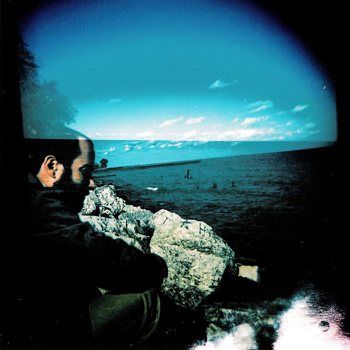

|  | tyler kendall, phdScience Administration | Computational Sociolinguistics | Speech Science | Data Science Senior Research Development Associate Duke University | Office of Campus Research Development tsk3 [at] duke [dot] edu Professor of Linguistics University of Oregon | College of Arts & Sciences tsk [at] uoregon [dot] edu (On leave for 2023-2024 year) Links//
Selected publications | Complete CV (as of ~November 2022) | Google Scholar
Research Other affiliations ORAAL & CORAAL SLAAP NORM | CRAN: Vowels.R (GitHub Repo) More: NWAV 48 @ UO (Oct. 2019) | |
|
Last updated: January 2023, Tyler Kendall | ||